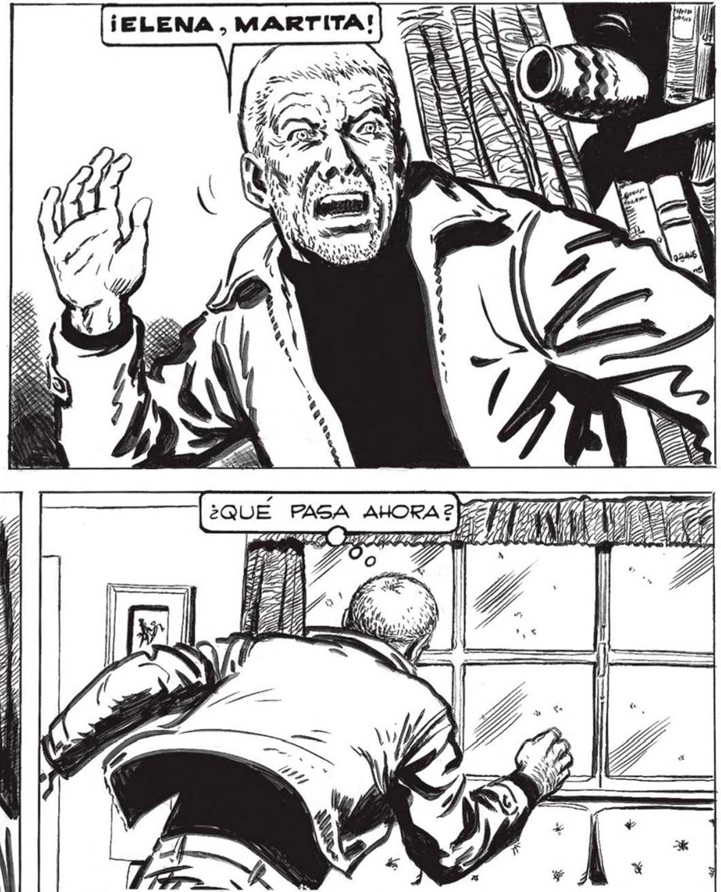

NO IMPORTA) JUAN: SEGURO QUE EN] [¡MEJOR 325 LA ZONA DE SEGURIDAD HABRA MmU- | | QUE sOCREO QUE YA TENEMOS TODO... LATAS DE DURAZNOS AL NATURAL, LECHE CONDENSADA,CAFE INSTANTANEO, GALLETITAS, QUESO, SARDINAS... PERO... Exa una NUEVA ¡yA GABIA QUE DE ALGO ME OLVIDABA !¡LA COCAPRUEBA DE LA : ABRUMADORA ¡AQUÍ LA TRAIGO YO, MAMA! CAPACIDAD TEC- | NE ñ Veras TAN ATAREADAG Y CONTENTAS... ¡LEVANTABAN EL ANIMO_A CUALQUIERA l RN e CHA GENTE, Y ES POSIBLE QUE FAL BRE Y NO TEN MUCHAS COSAS... QUE FALTE! Print, NICA DE LOG INVASORES. ALGO COMO FARA ENFRIARK EL OPTI!MISMO QUE NOS EMBARKGABA ... / : / 7 ¡MIREN QUE NO NOS VAMOS AL POLO! ¡HASTA PERGAMINO SON APENAS TRES HORAS DE CAMION! N ELENA Y MARTITA, OCUPADAS CON EL VIAJE COMO SI SE TRATARA DE UN PICNIC... REALMENTE, ESTAR EN LA ZONA LIBRE DE NEVADA... NO MAG TRAJES AISLANTES,NO MAS SABERSE RODEADO POR TODO UN ENORME CEMENTERIO... PERO... ..A LOS QUE, SEIS, MESES ATRAS, HICIERAMOS PARA VIAJAR A MAR DEL PLATA. ME SORPRENDÍ SONRIENDO, CONTENTO: IGUAL QUE SI ANTICIPARA EL PLACER DE. UNA VACACION LARGAMENTE DESEADA. a VIOLENTO RETUMBO BRUSCO GACUDIO”. LA CASA TODA... DECIDIDAMENTE, JUAN, ESTAS CON LOS NERVIOS A LA MIGERIA.. APRENDE DE ELENA Y MARTITA : GON DOS VERDADERAS VETERANAS... ) ¡NO TE PREOCUPES, JUAN!¡ES ALGÚN “GURBO” QUE PASA CERCA! SIEMPRE MUEVEN TODO CUANDO PASAN... ¿QUÉ PASA AHORA? NT p 0/0 4154 | Era; $4) Le YN Ll »x A S SONO) Dr ASOUNT a ARCA AN Y (y == A yan ALLÍ FUERA,DELANTE DEL CHALET, HIZO RETEMBLAR Pozo NO LLEGUE A CALMARME; UN GÚBITO RUGIDO... LOS VIDRIOS DE LA VENTANA...
